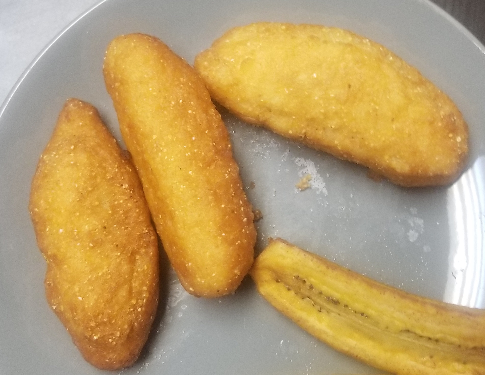

Jamaican Festival

Jamaican Fried Festival
Ingredients
- 2 cups flour
- 1 cup cornmeal
- 2 tsp baking powder
- 3 tbsp sugar
- 1/2 tsp salt
- 2 tbsp softened butter
- 1 cup Water
- Oil for Frying
Method
- Mix dry ingredients together
- Cut in butter
- Add water gradually until it has the consistency of dough
- Shape into ovels
- Fry in deep frying pan with enough oil to partially cover, turning occasionally until golden
- Take out and rest on paper towel to get excess oil
ENJOY